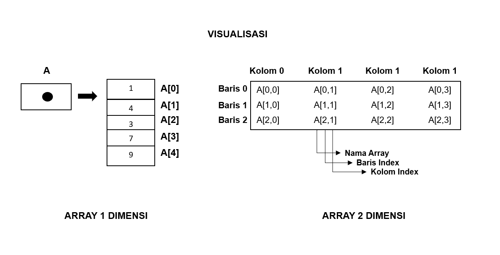
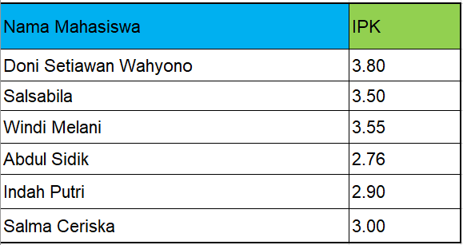
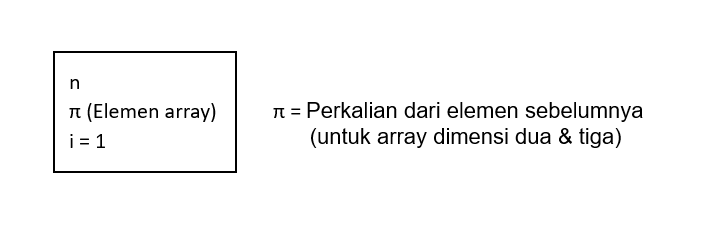
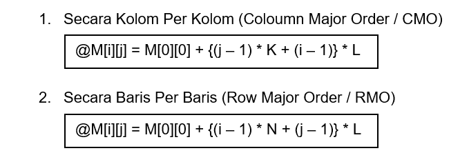
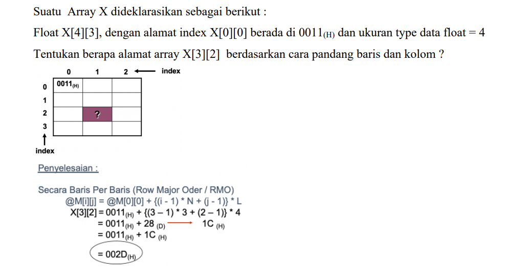
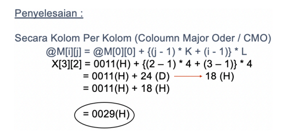

Array Lanjutan Dua Dimensi
.jpg?1676969394592)
Setelah belajar tentang array dan pengertian nya, disini kita akan melanjutkan pembelajaran materi array pada materi Array Lanjutan Dua Dimensi. Jika kalian belum mengenal apa itu array lebih baik belajar mengenai array pada tutorial Fungsi dan Pengertian Array
Pemahaman tentang tipe data array sangat penting terutama bagi Anda yang sedang belajar bahasa pemrograman untuk menjadi seorang programmer. Dengan mengetahui tipe data array, anda dapat menganalisis informasi atau data yang Anda dapatkan dan memilih tipe data yang tepat untuk menyimpan data tersebut.
Pengertian Array Dua Dimensi
Array Dua Dimensi merupakan tipe data yang memakai dua elemen jadi Anda bisa memasukkan dua elemen sekaligus. Umumnya, jenis data Dua Dimensi ini memiliki fungsi untuk menampilkan sebuah data yang memiliki dua jenis elemen secara berbeda. Contohnya adalah Anda ingin menampilkan data jumlah siswa dan jumlah bangku di sebuah kelas. Maka, data yang ditampilkan adalah elemen jumlah siswa dan jumlah bangku siswa di sebuah kelas.
Pendeklarasian Array Dua Dimensi
Untuk mendeklarasikan sebuah array Dua Dimensi dalam C++, sobat dondon harus menggunakan
tanda [ ]
(bracket). Adapun bentuk umum dari pendeklarasian array Dua Dimensi adalah sebagai berikut:
tipe_data nama_variable [jumlah_elemen_baris] [jumlah_elemen_kolom]
Sebagai
contoh misal kita ingin mendeklarasikan sebuah array Dua Dimensi (misalnya dengan variabel
A) yang mempunyai jumlah elemen baris sebanyak 3, jumlah elemen kolom sebanyak 5 dan
array A memiliki tipe data int, maka bentuk array nya adalah sebagai berikut:
int
A[3][5];
Seandainya array A akan kita beri nilai saat pendeklarasian
(inisialisasi), maka contoh penulisannya dapat ditulis sebagai berikut:
int A[3][5]
= {{ 1,2,3,4,5 }, {6,7,8,9,10}, {11,12,13,14,15 }};
Dari pendeklarasian sekaligus inisialisasi array A diatas, dapat diartikan
bahwa kita telah memesan tempat pada memori komputer sebanyak 15 tempat, dengan indeks dari
A[0][0] sampai A[2][4], dimana nilai - nilai akan dimasukkan ke elemen array secara
berturut - turut, mulai dari A[0][0] akan di isi dengan nilai '1' sampai A[2][4]
yang di isi dengan nilai '15'.

Contoh aplikasi untuk array Dua Dimensi adalah seperti program
input IPK mahasiswa dengan hasil output seperti berikut :

Mengakses Array Dua Dimensi
Cara yang digunakan untuk mengakses elemen array dua dimensi adalah dengan menuliskan indeks
baris dan kolom nya. Misalnya pada array A diatas kita ingin mengakses nilai '8' yang
terdapat pada indeks baris ke 1 dan indeks kolom ke 2, kemudian menampung nilai tersebut
kedalam sebuah variabel yang bertipe int (misal int simpan), maka kita perlu menuliskan
kode programnya seperti berikut ini:
simpan = A[1][2];
* Perlu sobat
dondon ingat
meskipun array A memiliki jumlah elemen baris sebanyak 3 dan jumlah elemen kolom
sebanyak 5 atau di deklarasikan sebagai berikut : "A [3][5];". namun karena indeks array
selalu dimulai dari 0 maka untuk mengakses elemen terakhir dari array A, kita dapat
mengaksesnya dengan menuliskan A[2][4] bukan A[3][5].
Menentukan Jumlah Elemen Array Dua Dimensi

Contoh :
Suatu Array X dideklarasikan dengan int X[4][3];
maka jumlah elemen array tersebut adalah :
(4) * (3) = 12
Terbagi dua cara
pandang (representasi) yang berbeda :

Keterangan :
@M[i][j] = Posisi Array
yg dicari, M[0][0] = Posisi alamat awal index array,
i = Baris,
j = Kolom,
L =
Ukuran memory type data,
K = Banyaknya elemen per kolom,
N = Banyaknya elemen per
baris
Penggambaran Secara Logika

Contoh Pemetaan


Program Array Dua Dimensi Dalam C++
Berikut ini adalah contoh program sederhana menampilkan matrik ordo 3x2, dimana program ini
menggunakan Array Dua Dimensi.
#include <iostream>
using namespace std;
int main( ) {
// Deklarasi dan inisialisasi array dua dimensi
// Dengan jumlah elemen baris = 3
// dan jumlah elemen kolom = 2
int matrikcontoh [ 3 ] [ 2 ] = { { 1,2 },{ 3,4 },{ 5,6 } } ;
// Mendeklarasi variabel untuk
// Indeks perulangan
int i,j;
cout << "\t ==============================" ;
cout << "\n \t === Tampil Matrik Ordo 3x2 ===\n " ;
cout << "\t ==============================\n \n" ;
// Menampilkan matrikcontoh
cout << "\n Menampilkan matrikcontoh\n" ;
for (i= 0 ;i< 3 ;i++ ) {
for (j= 0 ;j< 2 ;j++ ) {
cout <<matrikcontoh[i ] [j] << " " ;
}
cout <<endl;
}
return 0 ;
}
Lanjutan
Sekian Artikel mengenai Array Lanjutan Dua Dimensi, Lengkap Contoh Program dan Penjelasan. semoga artikel ini dapat bermanfaat bagi sobat dondon baik untuk menambah ilmu, mengerjakan tugas, maupun untuk sekedar menambah wawasan tentang Array Dua Dimensi C++, Contoh array 2 dimensi c++ sederhana, inisialisasi array dua dimensi dan Contoh Program Dengan Array Dua Dimensi C++. Akhir kata, Terimakasih atas kunjungannya.